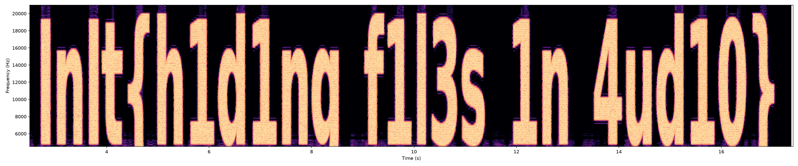

Starting from the Challenge
The goal is to find a hidden message in the provided Train_Announcement.wav. It sounds like a train announcement with an unusual sound added to it, and I can make out words such as passenger and platform number. I'm not Indian, so I couldn't catch the announcement precisely, but it did not seem central to the puzzle. I checked the file structure, differences between the stereo waveforms, and the frequency distribution over time, in that order.
1. Checking the file and stereo channels
The file is 48,000Hz, 16-bit PCM(Pulse-Code Modulation), two-channel audio approximately 17.39 seconds long. Its size matches the PCM data length, so there was no sign of a file simply appended to the end. The correlation coefficient between the two channels was approximately 0.99999994, and the difference between left and right samples ranged from −21 to 18.
I checked whether the differences contained a message, but found only small noise distributed across the entire recording with a mean close to zero and no readable pattern. I therefore moved from subtracting the channels to a time-frequency visualization.
Q: If the message is carried by changing frequencies, what view would make it visible?
2. The hidden text appears in a spectrogram
A spectrogram displays time on the horizontal axis, frequency on the vertical axis, and the strength of each component by color. STFT(Short-Time Fourier Transform) analyzes frequency while moving a short time window, so text drawn with frequencies inside a sound appears as an image.
# plot_spectrogram.py — written for this write-up
from scipy.io import wavfile
from scipy.signal import spectrogram
import matplotlib.pyplot as plt
import numpy as np
rate, samples = wavfile.read("Train_Announcement.wav")
left = samples[:, 0]
freq, time, power = spectrogram(
left,
fs=rate,
nperseg=2048,
noverlap=1920,
)
db = 10 * np.log10(power + 1e-12)
plt.figure(figsize=(18, 6))
plt.pcolormesh(time, freq / 1000, db, shading="auto", cmap="magma")
plt.xlim(2.5, 17.4)
plt.ylim(4.5, 21)
plt.xlabel("Time (s)")
plt.ylabel("Frequency (kHz)")
plt.tight_layout()
plt.savefig("hidden_text_spectrogram.png", dpi=200)

Running the code generated hidden_text_spectrogram.png. The flag was visible in the image.
Final Flag
InIt{h1d1ng_f1l3s_1n_4ud10}
Summary
- Audio check: The WAV has normal PCM length, and subtracting its nearly identical channels does not reveal text.
- Visualization: Plot the left channel as a spectrogram and focus on 2.5–17.4 seconds at 4.5–21 kHz.
- Result: The flag is written directly in the frequency plot.
- Train_Announcement.wav
- Check PCM and channels
- Compute spectrogram
- Crop time/frequency range
- Open hidden_text_spectrogram.png
- Read the flag